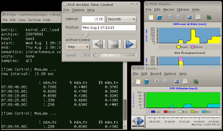
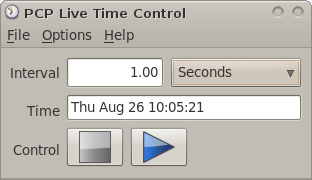
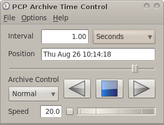

Home · Charts · Time Control
|
|
Home · Charts · Time Control |
The graphical time control utility, pmtime, is used to coordinate all aspects of time synchonisation in pmchart. Most importantly, this means the current sample time is set by pmtime, but also includes things like the update delta, update speed, and the timezone. It presents a VCR model which can be used to stop time, play forwards, rewind, and fast forward through time.
Main Window |
|  |
pmtime can actually coordinate the flow of time to multiple client programs. For example, if a second pmchart is started via the Options menu, it will share the time control process with the original pmchart and both will be updated in lock-step. This is true for both Live and Archive monitoring, and there is even support for controlling time for other PCP clients (like pmval) as well.
Live Mode |
 |
There are just two states available in live mode:
|
Archive Mode |
 |
There are several modes of playback available in archive mode:
The Speed setting can be changed by directly editing the text entry box, or more simply by selecting and rotating the wheel either left or right. Speed is only relevent in Normal mode. |
In archive mode, the Position text box is editable, and any valid PCP timestamp can be entered here. Alternatively, and more simply, the archive mode provides a slider beneath the Position text box allowing the time position to be set directly using the pointing device (click, drag, and release at the desired time position).
One last feature specific to archive mode, is the Time Bounds dialog. This window, available from the Options menu, displays the start and end position for all archives presented to pmchart (and hence pmtime). The editable Start and End position text boxes (and associated sliders) allow the time updates to be restricted to a specific time range. Once archive play/rewind hits these caliper points, replay will stop (independent of whether that is the start or end of the archive). This allows for a fine-grained level of focus around particular performance events. |
 |
Copyright © 2007-2010 Aconex |